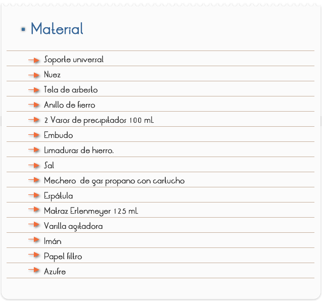
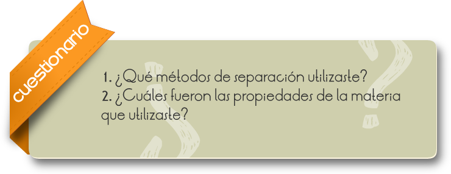

Introducción
Las mezclas heterogéneas son mezclas compuestas de sustancias visiblemente diferentes, o de fases diferentes y presentan un aspecto no uniforme. Un ejemplo es agua (liquido) y arena (sólido). Las partes de una mezcla heterogénea pueden ser separadas por filtración, decantación y por separación magnética. Sus sustancias puras se combinan, conservando cada una sus propiedades particulares, de tal manera que podemos distinguir las sustancias que la componen. En las mezclas heterogéneas podemos distinguir cuatro tipos de mezclas:
Coloides: son aquellas formadas por dos fases sin la posibilidad de mezclarse los componentes (Fase Sol y Gel). Entre los coloides encontramos la mayonesa, gelatina, humo del tabaco y el detergente disuelto en agua.
Sol: Estado diluido de la mezcla, pero no llega a ser líquido, tal es el caso de las cremas, espumas, etc.
Gel: Estado con mayor cohesión que la fase Sol, pero esta mezcla no alcanza a ser un estado sólido como por ejemplo la jalea.
Suspensiones: Mezclas heterogéneas formadas por un sólido que se dispersan en un medio líquido. Son una clase de materia que contiene dos o más sustancias en cantidades variables
Objetivo
Al finalizar la práctica, el alumno aplicará las propiedades de las sustancias presentes en una mezcla para lograr la separación física.

1. En un vaso de precipitado poner 2 cucharadas de cada material (limaduras de fierro, azufre, y sal) y agitar.
2. Tomar dos cucharadas de la mezcla anterior y colocarla sobre una hoja de papel.
3. Pasar un imán repetidamente por la mezcla.
4. Una vez extraído el hierro, coloca la muestra en un vaso de precipitado, adiciona 50 ml. de agua y agitar hasta disolver la sal.
5. Filtrar la mezcla.
6. Evaporar la disolución obtenida en el paso 5.

Comentarios